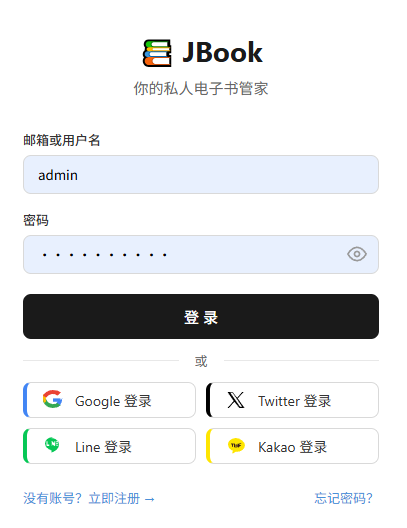

注册与登录
不注册也可以使用。系统会自动保留你的数据。需要更多功能时再注册账号，注册账号时，你以前的浏览、阅读、进度、书签和笔记都会跟着账号走。

注册
- 点页面左下角的「登录」。
- 在登录页切换到「注册」。
- 填写邮箱与密码，提交后即可使用。
登录方式
- 用户名 + 密码。
- 第三方账号：登录页下方会显示本站已开启的第三方登录入口（如 Google、Apple、Twitter、LINE、Kakao、Yandex）。点击后按提示授权即可。
忘记密码
- 在登录页点「忘记密码」。
- 填写注册时的邮箱，提交后会收到重置邮件。
- 按邮件里的链接设置新密码。
登录状态
- 关闭浏览器再打开，通常会保持登录。
- 如果提示登录已过期，重新登录即可；阅读进度和书签不会丢失。